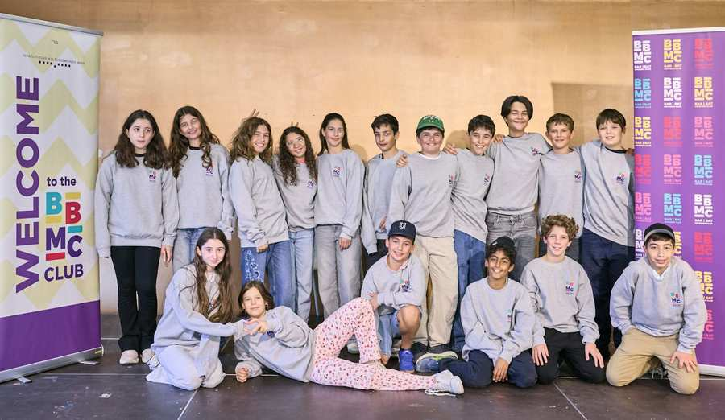

Startseite/Aktuell Kategorien Alle Kategorien Bild: IKG Wien Jugend Bild: IKG Wien Kultur Bild: IKG Wien News Bild: IKG Wien Rabbinat Bild: IKG Wien IKG-Newsletter bestellen Bild: IKG Wien Stets aktuell rund um die IKG und das jüdische Leben Wiens Newsletter Bild: IKG Wien News, Fokus Schulübergreifende Fortbildung für Mitarbeiter jüdischer Schulen 20.10.2026 Mehr Bild: IKG Wien Jugend, Likrat, Fokus Likrat 2027: Ein neuer Jahrgang, eine gemeinsame Mission 19.10.2026 Mehr Bild: IKG Wien Jugend, Fokus Neuer Jahrgang des Bar und Bat Mizwa Clubs 2026/27 20.10.2026 Mehr Bild: IKG Wien News, Fokus Erstes Halbjahr 2026: 671 antisemitische Vorfälle 15.10.2026 Mehr Bild: IKG Wien News Bericht: Sitzung des Kultusvorstandes vom 12. Oktober 2026 13.10.2026 Mehr Bild: IKG Wien News, Fokus Israels Schicksalswahl: Ben Segenreich analysierte die politische Lage 09.10.2026 Mehr Bild: IKG Wien Rabbinat, rabbinat-fokus, stadttempel-fokus Kantorenkonzert - Informationen zu getrennten Sitzbereich für Frauen und Männer 08.10.2026 Mehr Bild: IKG Wien Kultur „Oz’s List“: Ein besonderer Filmabend zum 7. Oktober 08.10.2026 Mehr Bild: IKG Wien News, Fokus Gemeinsames Gedenken zum dritten Jahrestag des 7. Oktober 07.10.2026 Mehr Mehr